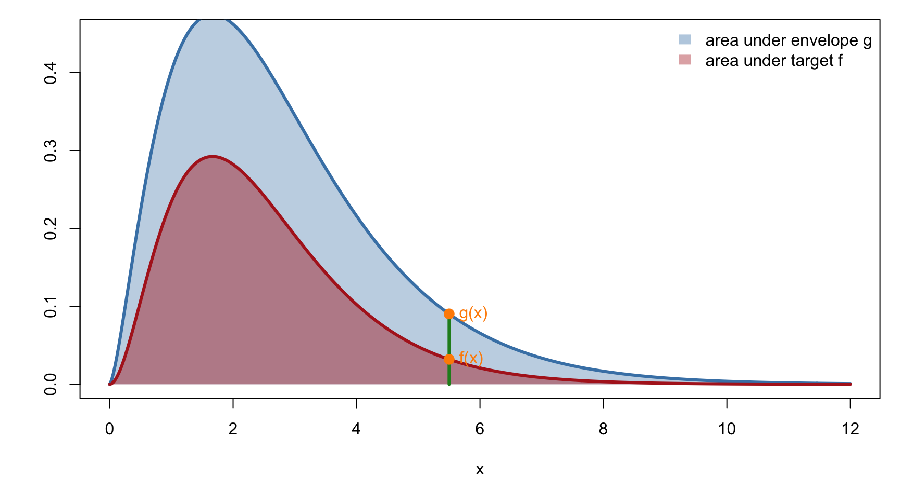
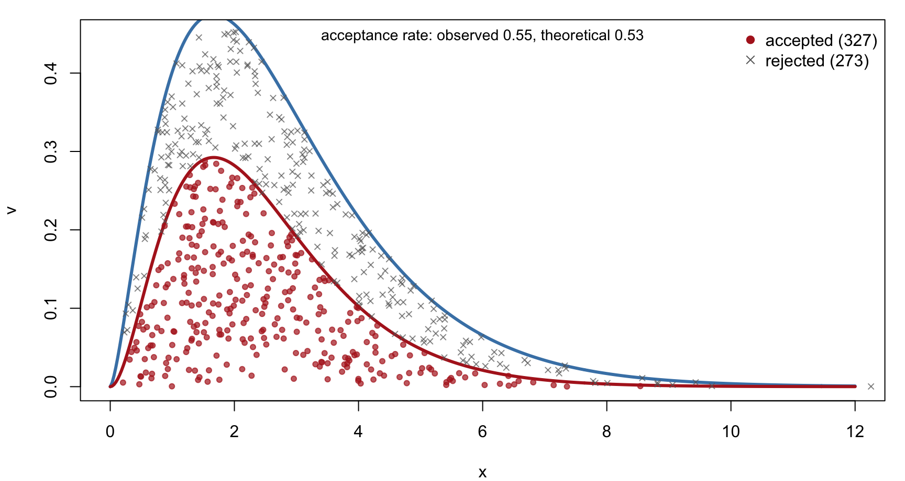
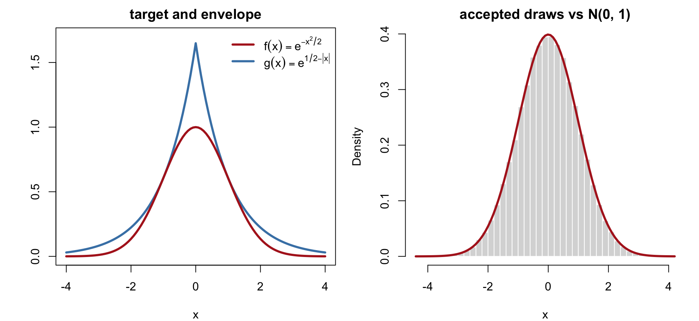
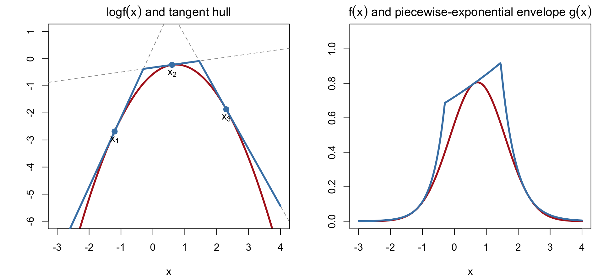

To compute I = \int a(\theta)\,f(\theta)\,d\theta = E_f\big[a(\theta)\big], \qquad \theta\sim f(\theta)
draw \theta_1,\ldots,\theta_N \overset{iid}{\sim} f and use \hat I = \frac1N\sum_{i=1}^N a(\theta_i)
The catch: we need to draw from f. For standard distributions R has rnorm, rgamma, etc. For a posterior f(\theta)\propto L(\theta)\pi(\theta) we typically know f only up to a normalizing constant and there is no built-in sampler.
Rejection sampling produces exact iid draws from f using draws from an easier distribution g: reject, reweight, repeat.
The Envelope
Suppose we can find a function g(x) such that
g(x)\ge f(x) for all x (an envelope of f), and
we can sample from the density g(x)\big/\!\int g(x)\,dx
Neither f nor g needs to be normalized: f may be an unnormalized posterior and g a scaled density M\,g_0(x).
Overall acceptance rate\frac{\int_{-\infty}^{\infty} f(x)\,dx}{\int_{-\infty}^{\infty} g(x)\,dx} = \frac{\text{area under } f}{\text{area under } g}
A tight envelope wastes few draws; a loose one wastes many.
The Envelope (Continued)

At each x, the ratio r = f(x)/g(x)\in[0,1] is the fraction of the green segment lying under f; a proposal at x is kept with probability r.
2. The Algorithm
Rejection Sampling
Input: target f, envelope g\ge f with a sampler for g(x)\big/\!\int g(x)\,dx.
For i = 1,\ldots,n, repeat until acceptance:
Draw x\sim g(x)\big/\!\int g(x)\,dx
Compute r = f(x)/g(x)
Draw U\sim\text{Unif}(0,1)
If U < r, accept: set x_i = x; otherwise return to step 1
The number of proposals per accepted draw is Geometric with mean \int g(x)\,dx\big/\!\int f(x)\,dx
Only ratios f/g are needed, so unknown normalizing constants cancel as long as g\ge f holds for the versions used
Alternative Description: Points Under a Curve
Repeat until acceptance:
Draw x\sim g
Draw V\sim\text{Unif}\big(0,\,g(x)\big), i.e. V = U\cdot g(x) with U\sim\text{Unif}(0,1)
If V < f(x), accept x; otherwise go back to 1
This is the same algorithm, since V = U g(x) < f(x) \iff U < f(x)/g(x).
Why it works. Steps 1–2 produce a point uniformly distributed in the region under g: (X,V)\sim\text{Unif}(G), \qquad G = \{(x,v): 0<v<g(x)\}
Step 3 keeps the point only if it also lies in the region under f: F = \{(x,v): 0<v<f(x)\}\subset G
A uniform point on G, conditioned on lying in F, is uniform on F. The x-coordinate of a uniform point on F has density proportional to the height f(x). \blacksquare
Alternative Description (Continued)

Points are uniform under g (all markers); the accepted ones (red) are uniform under f, and their x-coordinates are draws from f.
which is the distribution function of the normalized f. The denominator, P(\text{accept}) = \int f(x)\,dx\big/\!\int g(x)\,dx, is the acceptance rate stated earlier.
rlaplace <-function(n) { u <-runif(n); ifelse(u <0.5, log(2* u), -log(2* (1- u))) }f <-function(x) exp(-x^2/2); g <-function(x) exp(0.5-abs(x))rnorm_reject <-function(n) { out <-numeric(0); tries <-0while (length(out) < n) { x <-rlaplace(n); tries <- tries + n out <-c(out, x[runif(n) <f(x) /g(x)]) }list(x = out[1:n], acceptance = n / tries) }res <-rnorm_reject(1e5); c(mean =mean(res$x), sd =sd(res$x), acceptance = res$acceptance)
mean sd acceptance
0.001898247 0.996775757 0.500000000
Example 2 (Continued)

3. Adaptive Rejection Sampling
Log-Concave Targets
Finding a good envelope by hand is the hard part of rejection sampling. For a large class of targets it can be automated.
f is log-concave if \log f(x) is a concave function. Many posteriors are: normal, gamma (\alpha\ge1), beta (\alpha,\beta\ge1), logistic-regression posteriors with normal priors, and any product of log-concave factors.
Key fact: a concave function lies below every tangent line. So for tangent lines \ell_1(x),\ell_2(x),\ldots to \log f at points x_1<x_2<\cdots, the piecewise-linear upper hull \log g(x) = \min_j \ell_j(x) = \begin{cases}\ell_1(x), & x\in I_1\\ \ell_2(x), & x\in I_2\\ \ \vdots\end{cases}
satisfies \log g(x)\ge\log f(x), hence g(x) = e^{\ell_j(x)}\ge f(x) on each piece I_j.
Log-Concave Targets (Continued)

Left: tangents at three points bound the concave \log f from above. Right: exponentiating gives a piecewise-exponential envelope g\ge f.
Sampling from the Piecewise-Exponential Envelope
On piece I_j = (z_{j-1}, z_j) the envelope is g(x) = e^{a_j + b_j x}, so its integral and CDF are closed-form: \int_{z_{j-1}}^{z_j} e^{a_j+b_j t}\,dt = \frac{e^{a_j}}{b_j}\big(e^{b_j z_j} - e^{b_j z_{j-1}}\big),
\qquad F_g(x) = \frac{\int_{-\infty}^x g(t)\,dt}{\int_{-\infty}^{\infty} g(t)\,dt}
Draw from g(x)\big/\!\int g(x)\,dx by inverse CDF: pick a piece with probability proportional to its area, then invert the exponential CDF within the piece.
Adaptive rejection sampling (Gilks & Wild, 1992)
Start with a few tangent points x_1<\cdots<x_k (at least one on each side of the mode)
Draw x\sim g, U\sim\text{Unif}(0,1); accept if U<f(x)/g(x)
Whenever a point is rejected, add it to the tangent set and rebuild the hull
Each rejection tightens the envelope where it was loose, so the acceptance rate rises toward 1 as sampling proceeds. Only \log f and its derivative are required (a derivative-free version uses secants).
Summary and Limitations
Rejection sampling turns draws from an envelope g\ge f into exact iid draws from f, using only the ratio f/g; normalizing constants are not needed
Geometric view: uniform points under g, keep those under f
Efficiency =\int f(x)\,dx\big/\!\int g(x)\,dx; the envelope should be as tight as possible while remaining easy to sample
Adaptive rejection sampling builds and refines the envelope automatically for log-concave f
Limitations: an envelope with a bounded ratio g/f may not exist (heavier tails in f than in g); in high dimensions the acceptance rate typically decays exponentially with dimension. These limitations motivate importance sampling and Markov chain Monte Carlo (next lectures)